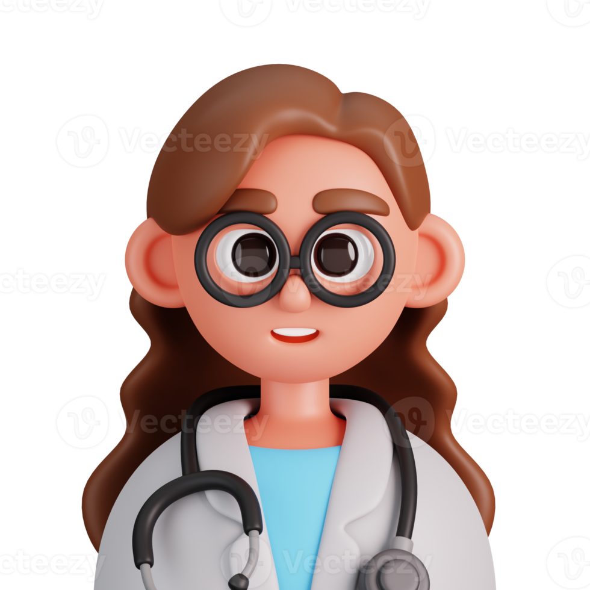

Dr. Jose Ignacio
Especialista en Terapia Neural
Medico de la universidad Nacional, cuenta con 34 años de experiencia en el sector salud
Atiende en el horario de 7am a 1pm
Dr. Joaquin Salazar
Especialista en Pediatría
Medico de la Universidad del Rosario, cuenta con 12 años de experiencia en desarrollo infantil
Atiende en el horario de 8:00 am a 2:00 pm.
Dra. Ibis Gonzales
Especialista en Cardiología
Médica de la Universidad del Valle, cuenta con 20 años de experiencia en cuidado crítico
Atiende en el horario de 1:00 pm a 7:00 pm.
Dra. Clara Rodriguez
Especialista en Dermatología
Médica de la Universidad de Antioquia, cuenta con 8 años de experiencia en estética clínica
Atiende en el horario de 7:00 am a 12:00 pm.

Dr. Felipe Navia
Especialista en Ortopedia
Médico de la Universidad del Cauca, cuenta con 15 años de experiencia en trauma deportivo
Atiende en el horario de 2:00 pm a 8:00 pm.
Dra. Juliana Salas
Especialista en Fisioterapia
Médica de la Universidad Nacional, cuenta con 25 años de experiencia en rehabilitaciones
Atiende en el horario de 6:00 am a 12:00 pm.